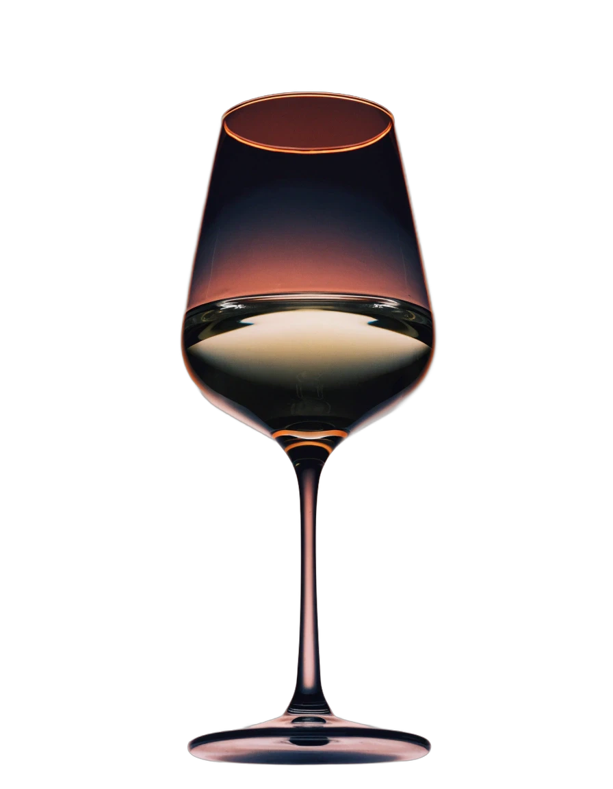
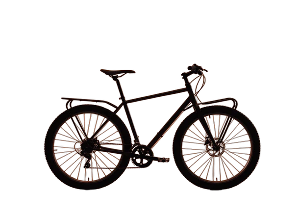
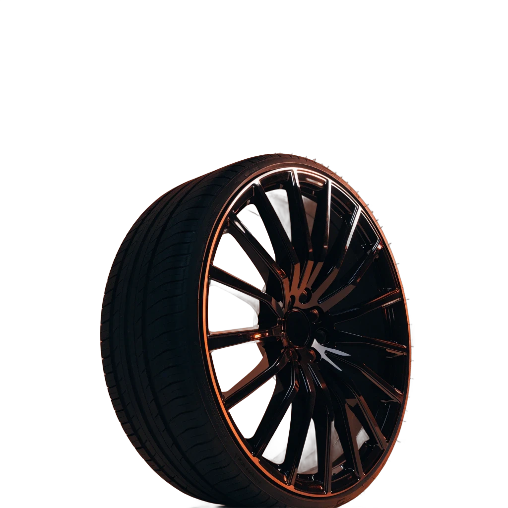
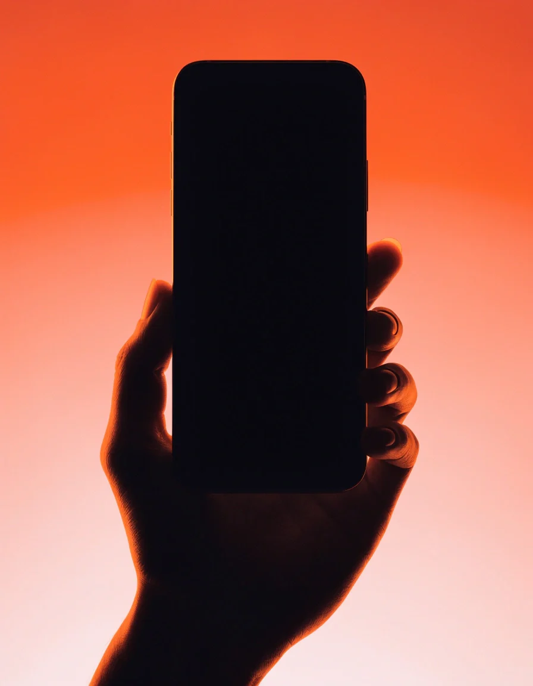
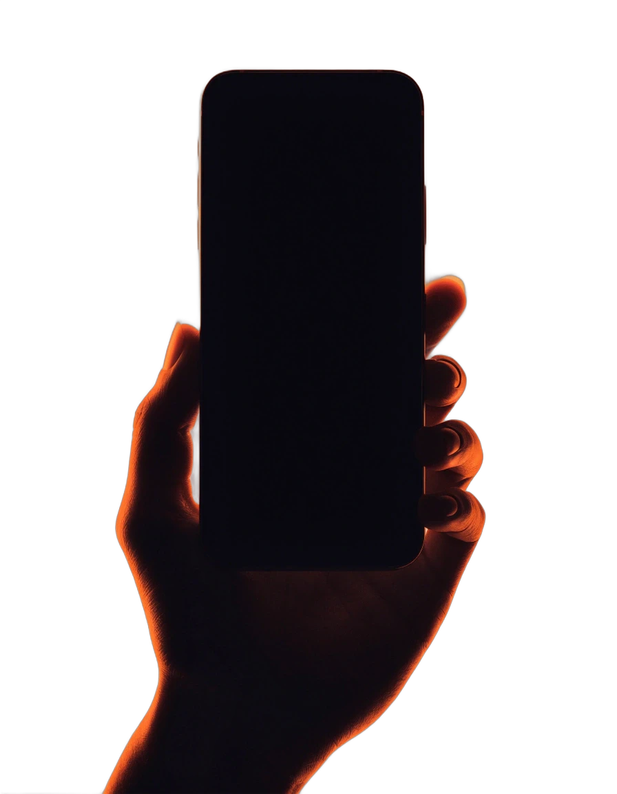

Nach deinen Referenzen: Orangetöne, dunkle Schatten, Hände als Silhouette, Typo hinter dem Motiv, Elemente ragen heraus. Die Objekte und die Hand sind neu erzeugte Bilder statt Ausschnitte aus den Collagen; die Phone-Screens sind gebaut, nicht abfotografiert, und bleiben dadurch gestochen scharf. Hover-Details bewegen nur Licht und Kleinstteile, nie das ganze Bild (kein Zoom, keine Parallaxe), damit keine Bewegungsübelkeit entsteht. Am Handy laufen sie, sobald die Kachel in der Mitte steht.
Ein freigestelltes Objekt pro Case, dahinter ein Wort aus der Markenwelt. Beim Hover passiert genau eine kleine Sache: Perlen steigen im Glas auf, ein Lichtstreif läuft über das Rad, die Bremse glüht. Dazu erscheinen die Pillen.

Multi-Channel-Relaunch für einen Familienbetrieb aus Württemberg.

Radmanufaktur für die härtesten Bike-Traveller, mit Konfigurator und B2B-Portal.

Internationaler Reifenhandel mit Felgen-Finder nach Marke, Modell und Baujahr.
Die Hand ist eine dunkle Silhouette, im Phone läuft der echte Shop. Genau ein Feature ragt heraus, darunter steht das Ergebnis. Beim Hover schiebt sich das Feature ein Stück weiter heraus.


Der Felgen-Finder ersetzt Suchen und Zweifeln durch drei Auswahlfelder.
Konfigurator für Rahmen, Farbe und Ausstattung, Abholung beim Händler.
Markenrelaunch der Fischmanufaktur mit Lieferstatus direkt aufs Handy.
Im Ruhezustand steht ein ruhiges Makro-Detail, ohne Animation: Profil, Speichen, Weinspiegel. Beim Hover klappen sechs Lamellen auf der Stelle auf wie eine Jalousie und geben das Feature frei. Das Feature ragt dabei über den Rand der Kachel hinaus. Es gibt keinen Zoom und keine Kamerafahrt, jede Lamelle dreht nur um sich selbst.
Radmanufaktur für Bike-Traveller, mit Konfigurator und Händlerabholung.
Internationaler Reifenhandel, Felgen-Finder nach Marke, Modell und Baujahr.
Etiketten wie Neu, Bio und Sale hängen direkt am Produkt, im Shop wie im Laden.